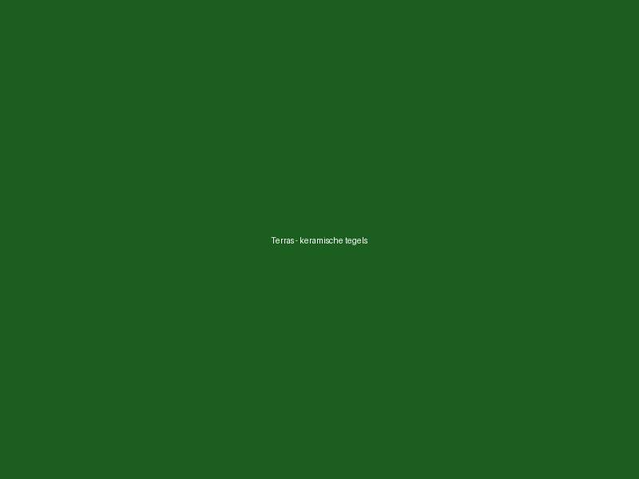
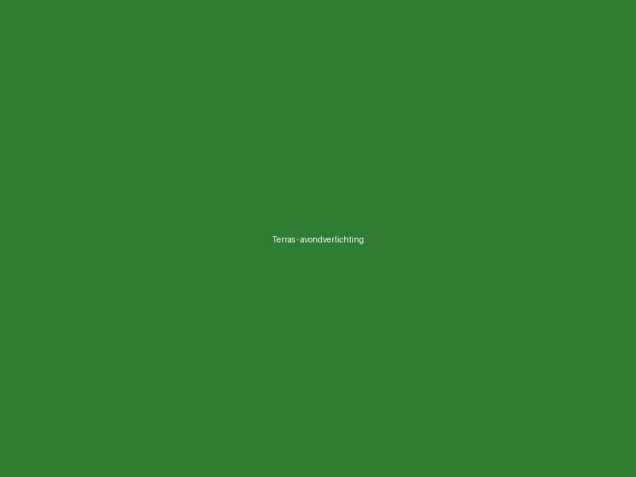
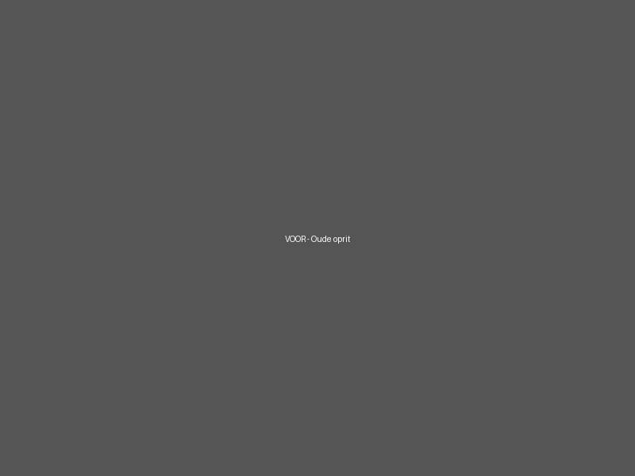
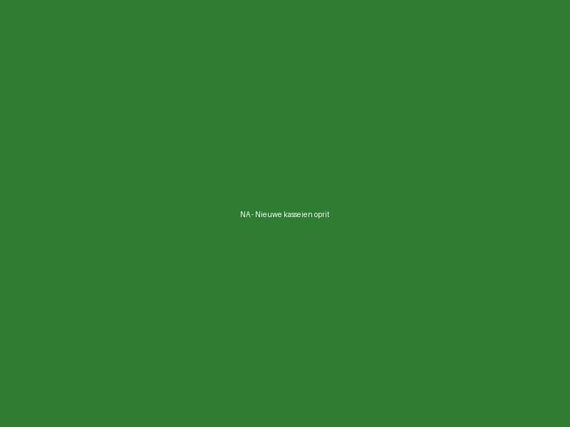
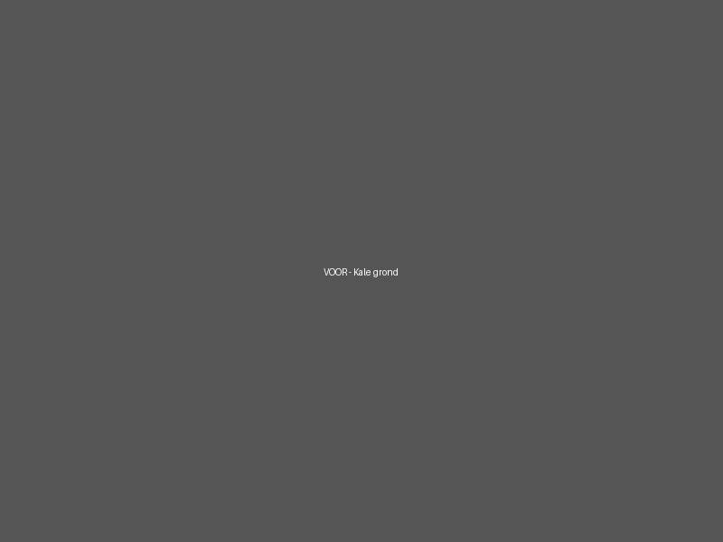
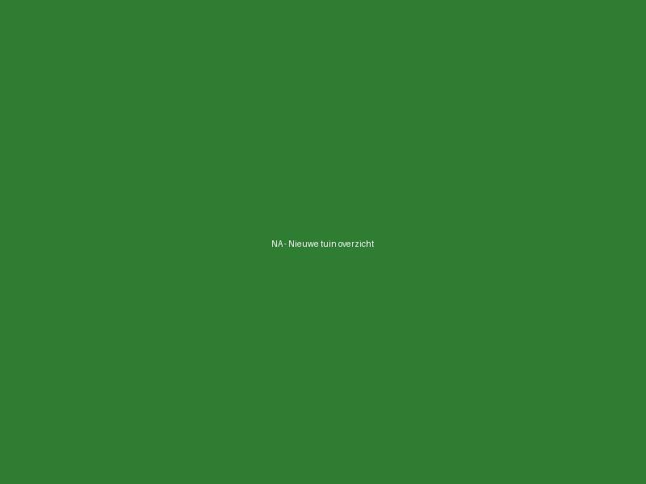
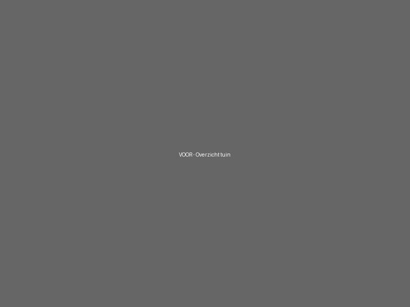
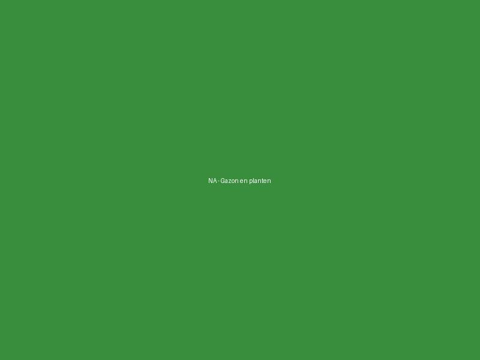

Terras Hasselt
Keramische tegels op plot — 45m²



Drie varianten om te bekijken. Open dit bestand lokaal in je browser.
Variant A — Enkel paar (before + after)
Volledige heraanleg oprit in betontegels


Variant B — Meerdere paren in 1 project
Compleet nieuwe aanplanting + terras




Variant C — Enkel "na" foto's (geen before beschikbaar)
Keramische tegels op plot — 45m²


Variant D — Side-by-side maar gestapeld op kleine schermen
Klinkers in visgraatmotief